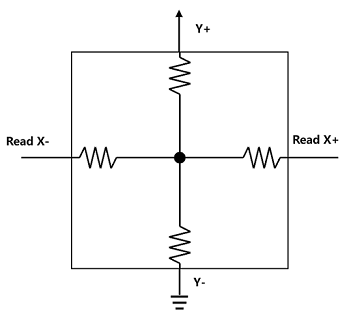

工作原理
硬件结构原理

如图所示，RTP 硬件分为下列多层结构：
-
表面硬图层：手指触摸的表面是一个硬涂层，用以保护下面的 PET 层。
-
PET 层：很薄、有弹性，当表面被触摸时它会向下弯曲，并使得下面的两层 ITO 涂层能够相互接触并在该点连通电路。
-
ITO 陶瓷层：两个 ITO 层之间是约千分之一英寸厚的一些隔离支点使两层分开。
-
玻璃底层：最下面是一个透明的硬底层用来支撑上面的结构，通常也可以用塑料。
RTP 多层结构会导致较大的光损失，手持设备通常需要加大背光源来弥补透光性不好的问题，从而增加电池的消耗。
坐标计算
-
当有触摸按下时，触摸点的 X 层和 Y 层会导通。
-
当没有触摸按下时，X 层和 Y 层分离，无法测得电压。
X 层上 X- 到 X+ 和 Y- 到 Y+的电阻是均匀分布的，其电路等效图如下：

-
计算 X 坐标：在 X+ 电极施加驱动电压 V， X- 电极接地，Y+ 做为引出端测量得到接触点的电压。

图 3. 计算 X 坐标的关系图 由于 ITO 层均匀导电，触点电压与 Vdrive 电压之比等于触点 X 坐标与屏宽度之比。x=(Vy/Vdrv)*width
- 计算 Y 坐标：在 Y+ 电极施加驱动电压 V，Y- 接地，芯片通过 X+ 测量接触点的电压。
图 4. 计算 Y 坐标的关系图 由于 ITO 层均匀导电，触点电压与 V 电压之比等于触点 Y 坐标与屏高度之比。y/height=Vx/Vdrvy=(Vx/Vdrv)*height
坐标采样
基于以上原理，对 X+、X-、Y+、Y- 加不同的电信号，拉低、还是拉高，会得到多种组合， 常用的组合命名为：XN、XP、YN、YP、ZA、ZB、ZC、ZD，具体电信号定义见 spec。 可以简单理解为：X*、Y* 都是和位置有关的数据，Z* 是和压感有关的数据。
坐标校准
-
LCD 屏中运行的 GUI 需要获得一个转换后的坐标， 且坐标值必须在 LCD 屏分辨率的范围内。
-
从触摸屏坐标转换到 LCD 坐标的过程，会执行一次线性转换，通用公式如下：

在线性转换公式中，s 表示 RTP 的 ADC 分辨率，12bit 表示 4096，即 RTP 采样得到的数据范围是 0~4095。校准过程如下：
- 分别点击屏幕的四个角落，可测到 4 组 LCD 坐标值和触摸屏触摸屏坐标值。
- 列出 8 个等式， 求解出 a、b、c、d、e、f 的值。
开源 tslib 库附带的 ts_calibrate 工具，提供了 5 点校准的处理。
压感计算
当打开压感数据后，便于根据压力数据来过滤掉一些抖动的点。 尤其在触摸时抬起的瞬间会大概率产生压力很小的采样数据，这样的数据会存在较大误差，可以根据压力将其过滤掉。
可以通过下列公式计算压力数据：
公式 1：

公式 2：

-
公式 1 只需一个 plate 参数，公式 2 需要 x-plate 和 y-plate 参数。
-
公式 1 中的 Z1 和 Z2 对应坐标组合 ZA 和 ZB 的数据
-
根据屏幕实测的电阻值，配置 DTS 中的 x-plate 和 y-plate 参数。